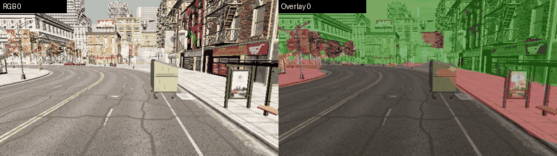

Actual CARLA camera replay: independent debris hazard
Physical RGB frame and the real SegFormer B0 overlay from the same frame
Normal — proceed
Policy action
nominal drive
Policy vehicle result
moving
Nominal baseline
no collision yet
Hazard
independent debris

Actual CARLA RGB and SegFormer B0 overlay replay
At frame 18 the nominal controller begins recording collision-frame events. The uncertainty-aware policy has already latched fallback braking and reaches standstill without a collision.